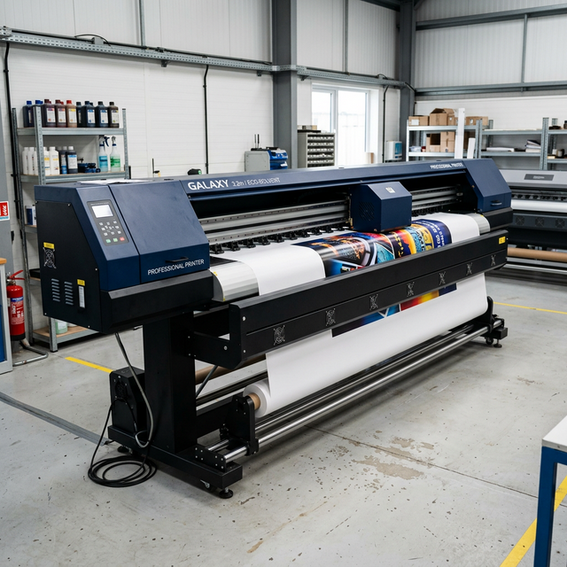
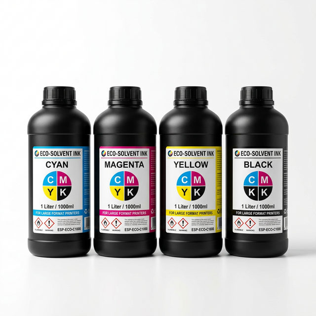
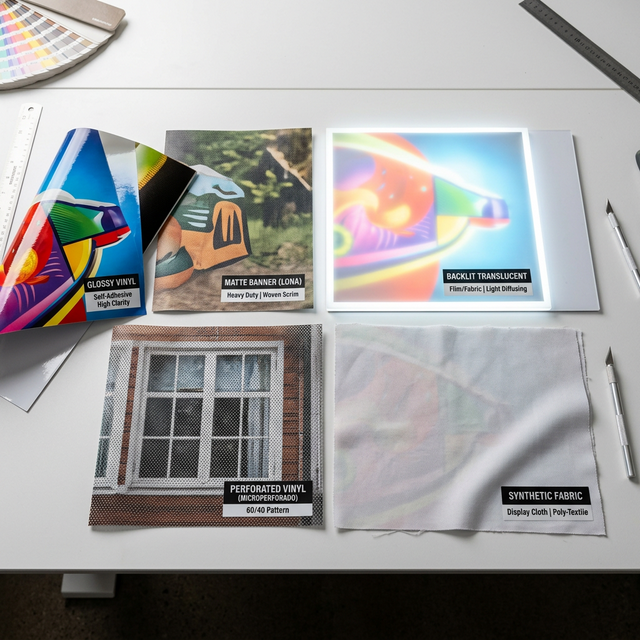
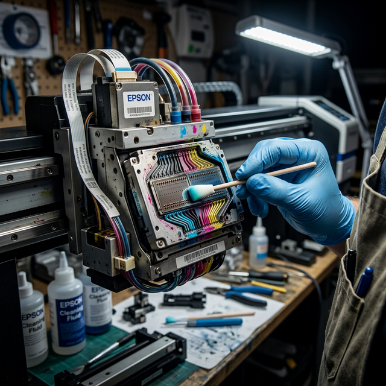
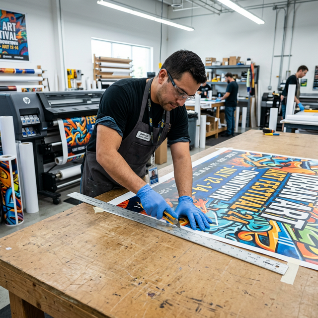

Habilidades Esenciales del Impresor
Para operar correctamente las máquinas en VisualCorp necesitas dominar estas áreas:
Rasterizar archivos y preparar trabajos para envío.
Enviar trabajos a impresión, configurar pasadas y parámetros.
Ink injection, Clean Strong, limpieza manual con ecosolvente.
Perfiles de color, calibración y verificación de calidad en cada print.
Cargar rollos de lona, vinil y otros materiales sin dañar los cabezales.
Cortar, enrollar, etiquetar y almacenar correctamente el trabajo terminado.
Nuestras Máquinas Galaxy
VisualCorp cuenta con dos impresoras de gran formato Galaxy de tintas ecosolventes. Aquí las specs de cada una.

📏 Ancho de impresión: hasta 3.2 metros
🔩 Cabezales instalados: 2 (posiciones 3 y 4)
🔩 Capacidad máxima: 4 cabezales
💧 Tipo de cabezal: Epson i3200-E1
🎨 Tinta: Ecosolvente CMYK
💻 Software: FlexiPRINT + Hosonsoft
📏 Ancho de impresión: hasta 2.5 metros
🔩 Cabezales instalados: 1
🔩 Capacidad máxima: 4 cabezales
💧 Tipo de cabezal: Epson i3200-E1
🎨 Tinta: Ecosolvente CMYK
💻 Software: FlexiPRINT + Hosonsoft
¿Qué es el cabezal Epson i3200-E1?
El Epson i3200-E1 es un cabezal piezoeléctrico de alta resolución (hasta 720×1440 dpi) diseñado para tintas ecosolventes. Tiene 3200 boquillas (800 por color: C, M, Y, K) lo que permite una impresión rápida y de alta calidad. Es más rápido y duradero que su predecesor DX5. Un cabezal en buen estado es la diferencia entre un trabajo perfecto y uno arruinado.
🎨 Tintas Ecosolventes

Software: FlexiPRINT y Hosonsoft
Usamos dos programas: uno para procesar (RIP) el archivo y otro para enviarlo a imprimir.
Flujo correcto: siempre FlexiPRINT PRIMERO, luego Hosonsoft
El archivo primero debe pasar por FlexiPRINT (RIP) antes de enviarse a Hosonsoft. No se puede enviar un archivo crudo directamente a la impresora. Si algo sale mal en el RIP, corrígelo en FlexiPRINT antes de imprimir.
Archivos y Red de Trabajo
Así funciona el flujo de archivos desde el diseñador hasta la impresora.
Carpeta "Artes Finales" en la red
La computadora de Vicky tiene la carpeta principal "Artes Finales". Esta carpeta está compartida en la red local de VisualCorp. Desde la PC de impresión puedes acceder a ella directamente sin necesidad de USB ni correos. Siempre abre el archivo desde ahí, nunca lo muevas ni elimines.
📄 Formatos de Archivo
| Formato | Calidad | ¿Cuándo usarlo? |
|---|---|---|
| TIFF | ⭐ Máxima | Formato preferido. Sin pérdida de calidad. Ideal para lonas grandes e impresiones de alta definición. |
| Alta | Aceptable si viene de Illustrator/Photoshop en alta resolución. Verificar que no esté comprimido. | |
| JPG | Media | Solo si no hay otra opción. Tiene compresión con pérdida. Pedir siempre el mayor quality disponible (JPG 100%). |
Resolución mínima recomendada
Para impresión de gran formato se trabaja a 72–150 DPI a tamaño real (no confundir con monitor donde 72dpi es baja resolución). Si el archivo viene a 300 dpi puede estar al 25% del tamaño final. Siempre verifica las dimensiones reales en centímetros/metros antes de imprimir.
Materiales y Número de Pasadas
Las "pasadas" (passes) indican cuántas veces pasa el cabezal sobre el mismo punto. Más pasadas = más calidad y tiempo de secado, pero más lento. Menos pasadas = más rápido pero potencialmente menos calidad.

Prohibido: No imprimir materiales de sublimación en estas máquinas
Las tintas ecosolventes y las tintas de sublimación son incompatibles. Nunca pases tela para sublimación en las Galaxy. Contaminas los cabezales y dañas la impresión. La sublimación se hace en equipos específicos.
| Material | Pasadas | Descripción / Uso típico |
|---|---|---|
| ⚡ 4 Pasadas — Lonas y materiales porosos | ||
| 🟢 Lona Económica | 4 📌 | Lona estándar de bajo costo. Para banners, gigantografías generales. |
| 🟢 Lona de Campaña | 4 📌 | Mayor resistencia. Para campañas electorales, exterior prolongado. |
| 🟢 Lona Op Mate | 4 📌 | Acabado mate, sin reflejo. Ideal para ambientes con mucha luz. |
| 🔵 Microperforado | 4 📌 | Con orificios para ventilación. Se usa en vidrieras de locales commerciales. |
| 🟤 Tela Sintética | 4 📌 | Tela poliéster con recubrimiento. Para banderas, telas de eventos. |
| 💡 Backlight | 4 📌 | Material para cajas de luz retroiluminadas. Deja pasar la luz uniformemente. |
| 🔷 6 Pasadas — Viniles y materiales lisos | ||
| ✨ Vinil Brillante | 6 🔷 | Alta saturación de colores, acabado espejo. Para adhesivos, rótulos y decoración. |
| 🔲 Vinil Mate | 6 🔷 | Sin brillo, premium. Para autos, decoración interior, señalética de lujo. |
| 💎 Lona Traslúcida | 6 🔷 | Semitransparente. Para cajas de luz. Usar "color 2" en Hosonsoft. |
Regla general de pasadas
Lonas y materiales con textura absorben más tinta → menos pasadas son suficientes (4). Los viniles y materiales lisos requieren más pasadas para que la tinta se adhiera uniformemente sin correrse (6). En caso de duda, siempre haz una prueba en un trozo pequeño del material antes de imprimir el trabajo completo.
Mantenimiento de las Máquinas
El cabezal Epson i3200-E1 es el componente más delicado y valioso de la impresora. Cuidarlo bien es la diferencia entre años de vida útil o gastos innecesarios de reemplazo.

El cabezal obstruido = trabajo arruinado + pérdida de dinero
Un cabezal con boquillas tapadas produce líneas blancas en la impresión, colores incorrectos y trabajos rechazados. El mantenimiento preventivo diario evita problemas mayores. Un cabezal nuevo puede costar cientos de dólares.
📅 Rutina de Mantenimiento
Si ves líneas blancas o colores incorrectos en la impresión
1) Para la impresión de inmediato. 2) Realiza un Nozzle Check para identificar qué boquillas fallaron. 3) Haz Clean Strong 2–3 veces. 4) Si continúa el problema, realiza limpieza manual con ecosolvente. 5) Informa al encargado si el problema persiste. No pierdas material imprimiendo con el cabezal dañado.
Proceso Post-Impresión
El trabajo no termina cuando la máquina para. El acabado y la organización son igual de importantes.

Las tintas ecosolventes necesitan unos minutos para adherirse completamente al material. No enrolles ni toques la superficie recién impresa. El tiempo de secado varía según el material y la temperatura del ambiente.
Usa un estilete afilado y una regla metálica para cortar recto. Cambia la cuchilla regularmente — una cuchilla sin filo desgarra el material en lugar de cortarlo limpiamente. Siempre corta sobre una superficie adecuada.
Enrolla la lona o vinil con la cara impresa hacia afuera (para lonas) o hacia adentro según el tipo de material. Hazlo de forma uniforme para evitar arrugas o marcas en la superficie impresa.
Escribe en un papel o etiqueta el nombre del cliente y descripción del trabajo. Pega o inserta la etiqueta en el rollo. Nunca dejes un trabajo sin identificar — luego es imposible saber de quién es.
Coloca el trabajo terminado en el área específica para impresiones listas. Mantén los rollos de pie o apoyados correctamente para que no se deformen. Avisa al asesor que el trabajo está listo para que notifique al cliente.
Proactividad: la clave del buen impresor
Cuando termines un trabajo, no esperes que te digan qué sigue. Revisa la cola de trabajos pendientes, prepara el próximo material, revisa los niveles de tinta. Un impresor proactivo mantiene el flujo constante y evita cuellos de botella.
Cultura de Trabajo en VisualCorp
Más allá de las máquinas, lo que hace grande a VisualCorp es su gente y cómo trabaja en equipo.
"La limpieza del lugar de trabajo es un reflejo de la calidad del trabajo que produces. Un taller ordenado es un taller productivo."
— Esteban NicolaPrincipios del equipo VisualCorp
🖨️
¡Eres el corazón de la producción!
Sin el impresor, no hay producto. Sin producto, no hay cliente. Sin cliente, no hay empresa. Tu trabajo es la base de todo lo que VisualCorp entrega al mundo.
← Volver al inicioHorarios de Trabajo
Estos son los horarios oficiales de VisualCorp. La puntualidad es parte del respeto hacia el equipo y los clientes.
💼
📋 Los lunes hay reunión de equipo al inicio del día. Llega puntual.
🎉
💰 La quincena se paga los sábados correspondientes.
Reunión obligatoria los lunes
Todos los lunes se hace reunión de equipo para revisar la semana, pendientes, metas y cualquier novedad. Es obligatoria y puntual: 8:20am. Ven preparado.